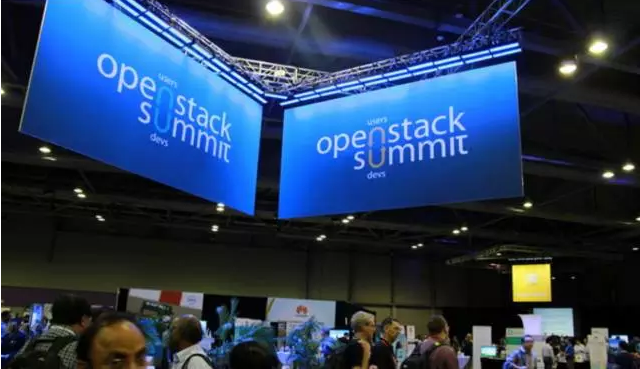
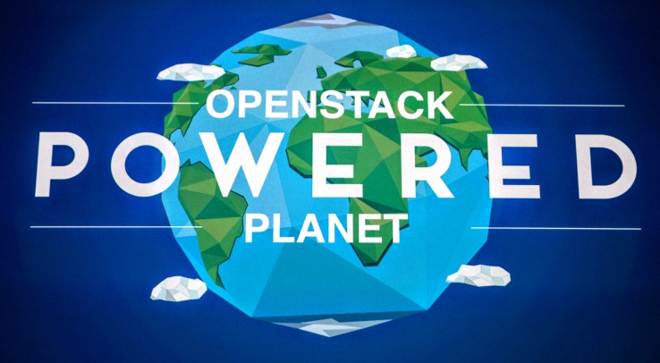
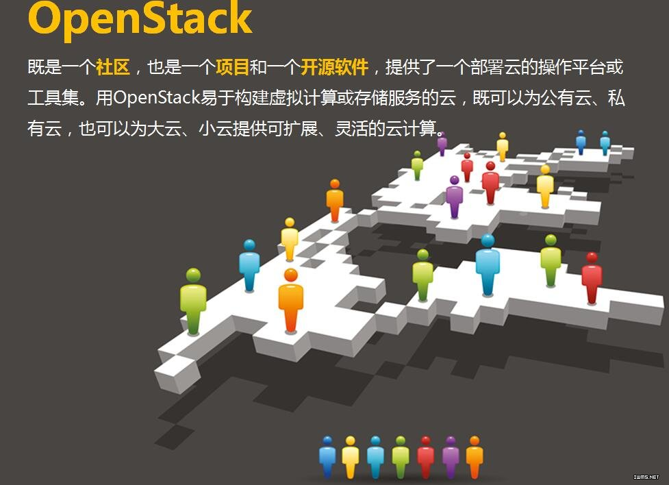
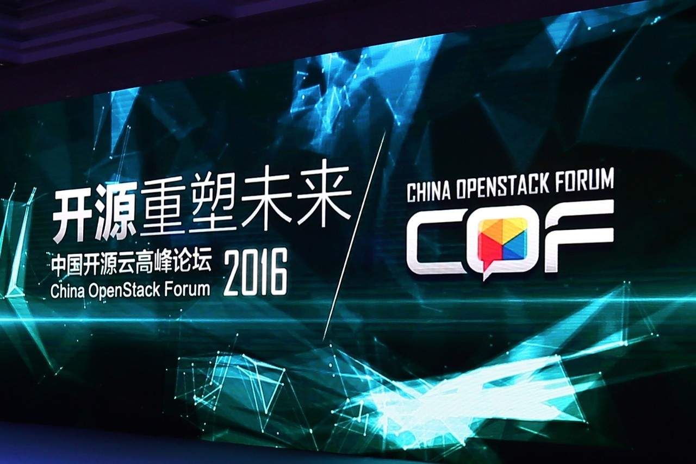
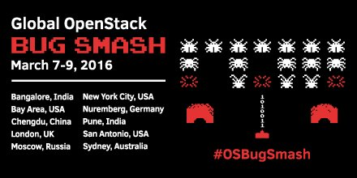

时间列表
2016
2015
2014
12
11
10
9
8
7
6
5
4
3
2
1
搜索新闻关键词

三大因素推动OpenStack公有云全球强势增长
2016/06/20
近日，随着OVH公有云、德国电信（Deutsche Telekom）Open Telekom Cloud和Cloud Team Alliance陆续上线，以及DataCentred和City Networkplus等大型客户的表态......
【了解详情】
OpenStack Days走进北京 主角是用户
2016/06/20
终于，OpenStack还是以人们所熟悉的方式来到了中国大陆地区......
【了解详情】
OpenStack基金会发布白皮书，推进容器技术
2016/06/20
最近的一项调查显示，69%的公司将会在下一年在生产环境中使用容器。为了更好地说明容器现下如此广受关注的原因，OpenStack基金会近期发布了一篇名为《探索机遇：容器与OpenStack》的白皮书......
【了解详情】

OpenStack确实火了
2016/06/20
确实，从2010年OpenStack开源项目诞生至今不过6年时间。而就在这短短几年内，OpenStack已经从一个默默无闻的开源项目成长为今天几乎无人不知、无人不晓，提及云计算必须关联到的一个......
【了解详情】

OpenStack为什么火
2016/06/20
论背后的原因，有很多。开放、开源就不多说了，这让更多的人可以参与进来（看看社区的强大，看看开发者的热情），让用户有机会拥有更低成本的工具（看看如今的VMware，承受着巨大的压力)......
【了解详情】

OpenStack的用户们
2016/06/20
厂商、用户、社区都这么努力，OpenStack岂有不火之理......
【了解详情】
OpenStack获实践徽章 安全可用性受肯定
2016/06/20
OpenStack日前宣布其开源云软件项目荣获Linux基金会核心基础设施计划(简称CII)颁发的最佳实践徽章......
【了解详情】

第四届中国OpenStack Bug Smash在杭州举办，持续引领开源生态发展
2016/06/20
华为、英特尔及中国电子技术标准化研究院联合举办的第四届中国OpenStack Bug Smash于7月6日至8日在杭州隆重举行......
【了解详情】